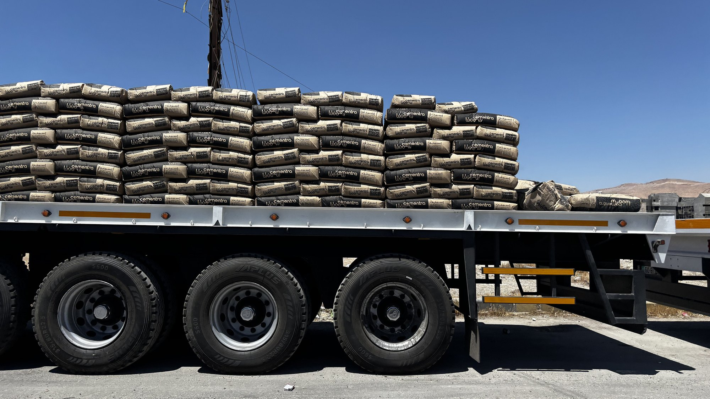
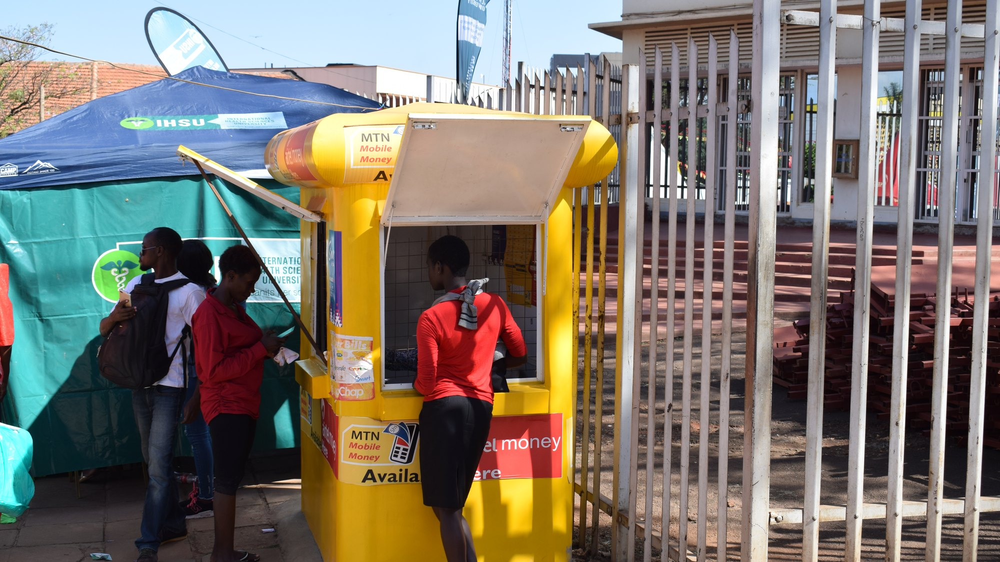
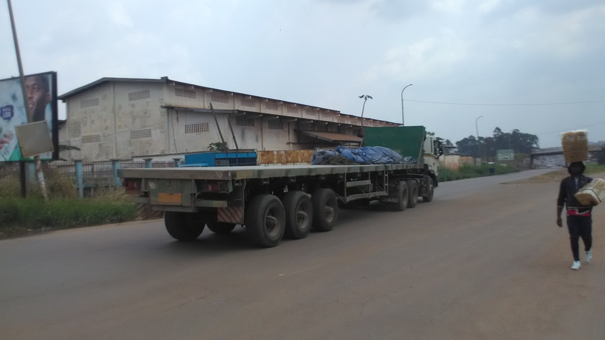

APIX All In One
Du paiement certifié au sac livré :
une seule chaîne, une seule preuve.
Une plateforme ubiquitaire : smartphone, web, et hors connexion.
Direction générale de PPC · 5 novembre 2026
Le paiement est certifié.
La marchandise, non.
Quatre questions auxquelles personne, aujourd'hui, ne peut répondre :
15 à 20 % des encaissements passent par le digital.
Résultat : c'est votre marque qui répond des 80 % restants.

Trois fuites qui coûtent, sans figurer dans aucun rapport
Une course décidée dans l'urgence part à 60 %. Le transporteur partenaire perd de l'argent, se décourage, et va travailler ailleurs. Le coût de la tonne transportée monte mécaniquement.
Un client reçoit moins de sacs qu'il n'en a payé. Le transporteur accuse le client, le client accuse l'usine. Sans constat contradictoire, l'usine tranche à l'aveugle — et paie en image.
Le prix ex-usine est compétitif. Entre l'usine et le chantier, le prix au sac ne reflète ni le trajet ni la charge. Le client conclut que le ciment PPC est cher.
Aucune de ces trois fuites ne se voit dans un état financier. Toutes les trois sortent de votre trésorerie, et toutes les trois atteignent votre image.
Il n'achète pas une application. Il achète une certitude.
Réapprovisionnement rapide, prix stable, crédit. Sa contrainte : la trésorerie et la rotation du stock.
Facture conforme, traçabilité, respect du planning. Sa contrainte : la comptabilité et les délais.
Prix total connu d'avance, livraison simple, preuve d'achat. Sa contrainte : le cash et le téléphone.
Chiffres communiqués par PPC en entretien, à confirmer sur un exercice complet. Ce n'est pas un marché à créer : c'est une couverture à compléter sur des clients qui existent déjà.
La chaîne de preuve, en six jalons
Chaque jalon produit une preuve, et chaque preuve conditionne le suivant — la cotation d'abord, le bon de commande ensuite.
Ce que cela change : le jour où un contentieux arrive sur 500 sacs, vous ne produisez pas une transaction — vous produisez un dossier.
Partout où le client se trouve
sur l'appareil qu'il possède déjà — et sans réseau quand il n'y en a pas.

Le paiement mobile n'est pas une option à créer : il est déjà dans la rue.
| Transporteur | Engin | Statut |
|---|---|---|
| Trans-Kongo | Porteur 15 t | Homologué |
| Sanga Logistique | Semi 30 t | Assurance expirée |
| Mbala Transit | Porteur 10 t | Homologué |
Maquettes schématiques, non contractuelles.
Le client paie PPC. Le transporteur est payé sur preuve.
Chaque paiement porte la référence d'une cotation, encaissée avant le chargement. Le transport n'est réglé qu'après la livraison prouvée — et seulement s'il figure dans l'offre.
Le client reçoit une cotation ferme, puis paie en la référençant. Mobile money, virement ou espèces via un agent agréé.
La cotation encaissée devient le bon de commande. La part transport est isolée et provisionnée.
Le client valide sur son téléphone : quantité, état, scellé. La preuve est signée.
Sur preuve conforme, dans le délai que PPC arrêtera. Retenue partielle en cas d'écart constaté.
« Le client paie PPC. PPC paie le transport — et seulement sur preuve. »
Le client est protégé par un dossier qu'il peut produire, pas par un gel de ses fonds.
Trois banques seulement sont connectées au dispositif d'encaissement : le reste des flux est rapproché à la main.
Quatre éléments, un seul dossier
Prise à la remise, horodatée, non modifiable, avec coordonnées et identité du chauffeur.
Remis au client, à usage unique, signé. Impossible à rejouer.
Poids au chargement confronté au poids constaté, tolérance contractuelle.
Relevé au départ, vérifié à l'arrivée. Une rupture ouvre un litige automatique.

À la livraison, la preuve vaut mieux que la parole.
Le transport cesse d'être un forfait : il devient un prix calculé
- Un tarif forfaitaire, identique quel que soit le trajet.
- Ni la distance réelle ni le tonnage ne sont pris en compte.
- PPC ne maîtrise pas le prix final au quartier.
- Un barème publié par PPC, versionné et daté.
- Un prix calculé à l'axe et au poids, jamais forfaitaire.
- Le total annoncé est exactement celui qui sera payé.
La conséquence commerciale : le barème est le vôtre. APIX l'applique, il ne le décide pas. Le prix affiché au quartier redevient celui que PPC a choisi.
Cinq petits acheteurs, un seul camion
Simulation sur un axe de 210 km, cinq clients, cinq points de livraison.
Et si le lot ne se remplit pas ? Trois issues sont écrites : la poursuite avec un engin plus petit, le report accepté par le client jusqu'au remplissage du lot, ou le remboursement à sa demande. Aucun client ne reste bloqué.
Deux approches, deux natures différentes
| Critère | Digiciment | APIX All In One |
|---|---|---|
| Nature | Application de transactions | Chaîne de preuve du paiement au sac livré |
| Unité de référence | La transaction | La cotation certifiée et son bon |
| Transporteurs | Gestion locale, non documentée | Homologation par PPC, datée et révocable |
| Prix du transport | Forfaitaire | Calculé à l'axe et au poids, barème PPC |
| Preuve de livraison | Reçu simple | QR, photo géolocalisée, pesée, scellé |
| Sécurité du règlement | Paiement direct, sans preuve | Règlement sur preuve de livraison |
| Hors connexion | Connexion requise | 72 heures pour le chauffeur |
| Litige | Traité au cas par cas | Dossier de preuve, décision motivée par PPC |
Comparaison établie sur le périmètre fonctionnel annoncé. Toute correction de votre part est bienvenue : elle sera intégrée avant la démonstration.
PPC garde la main — cinq décisions, et nous commençons
Vous décidez qui transporte, à quel prix, et comment se règle un litige. APIX rend chacune de ces décisions exécutable, visible et opposable.
Trois semaines d'ateliers suffisent à trancher ces cinq points. Elles conditionnent tout le reste.
Quatre sources de valeur, trois façons de la facturer
Bons et preuves signés, vérifiables, opposables.
Remplissage, litiges, impayés : trois postes qui se mesurent.
Le transporteur est payé sur preuve, sans avance de trésorerie.
Volume par axe, produit et période — un actif pour la production.
Trois modèles possibles — recommandation : le mixte. Frais par course (simple, aligné sur l'usage) · Abonnement PPC (prévisible, finance l'exploitation) · Mixte (base fixe + frais dégressifs).
Aucun prix n'est avancé : le modèle se cale sur les volumes et le barème réels de PPC.
Qui porte le projet
Pilotage, arbitrages de périmètre, relation PPC.
Applications mobile et web, encaissement, règlement, sécurité, hors-ligne.
Barème, homologation, traitement des litiges.
APIX est déjà en production sur les comptes de PPC : nous ne partons pas d'une page blanche. Nous ne touchons ni au transport ni à la vente : nous outillons ceux qui les font.
Cette annexe doit être complétée avec les noms et références réelles avant toute présentation.
Seize semaines jusqu'au pilote, deux facteurs hors de notre contrôle
Décisions D1 à D5, barème initial, référentiel transporteurs
Parcours, maquettes, architecture validée
Chaîne de preuve complète, back-office, application chauffeur
Un axe, un produit, cinq à dix transporteurs
Deuxième axe, puis groupage
Hors de notre contrôle : la vitesse d'homologation des transporteurs et la publication du barème. Ce sont les deux seuls risques de calendrier.
Règles d'arbitrage et répartition des frais
| Seuil de remplissage atteint | Le lot est déclenché, la course est publiée |
| Délai écoulé, lot incomplet | Poursuite avec un engin plus petit |
| Le client accepte d'attendre | Report jusqu'au remplissage du lot |
| Le client refuse | Remboursement sans frais, sur sa demande |
Part du client = coût de la course × (poids × distance) ÷ somme des (poids × distance) du lot
À quoi s'ajoute une quote-part des frais fixes au prorata du poids. Sans cette composante, les gros acheteurs financeraient les petits — et le mécanisme serait rejeté dès la première facture.
Le détail du calcul reste consultable par le client, avant et après paiement.
Règle tenue : aucun client ne reste bloqué, et le remboursement reste un droit, jamais une sanction.
Ce qui se passe quand la livraison ne correspond pas
- Écart de poids hors tolérance : déclaré automatiquement par le système.
- Scellé rompu ou différent de celui du chargement : litige automatique.
- Refus de validation par le client : déclaration immédiate, preuves conservées.
- Délai de déclaration : 48 heures après livraison pour les autres motifs.
- Gel de la part contestée, et d'elle seule
- Instruction sur dossier de preuve
- Décision motivée par PPC
- Retenue au prorata, règlement du solde
Le litige le plus fréquent n'est pas le retard : c'est l'écart de poids. Sans pesée contradictoire et sans numéro de scellé, il se règle à la parole — et c'est l'usine qui tranche à l'aveugle.
Ce qui protège l'argent et la preuve
Le transport est provisionné à l'encaissement, puis réglé au transporteur sur preuve de livraison. FBB n'exécute aucun paiement : il instruit et certifie.
Bons et preuves signés cryptographiquement, vérifiables hors ligne par la console de chargement, sans appel serveur.
Écriture en ajout seul, chaînée par empreintes, conservée dix ans. Rien ne se supprime : une correction est un nouvel événement.
Toute opération financière porte une clé unique : un rejeu technique ne produit jamais de double mouvement.
Base locale chiffrée, file d'opérations rejouables, 72 heures d'autonomie, aucune preuve perdue en cas de coupure.
Données et référentiels exportables, interfaces documentées : PPC n'est pas captif.